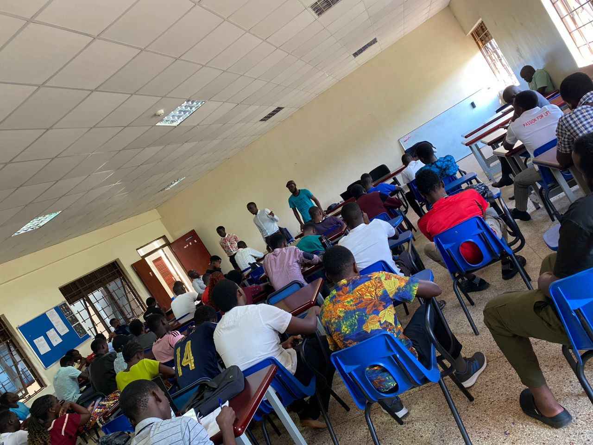

About Us
Who We Are
A collective of like minded health professionals advancing health equity across all corners of Uganda.
A collective of like minded health professionals advancing health equity across all corners of Uganda.

SocMed Global Uganda is a collective of like-minded health professionals who live, practice, and accompany patients and communities through their illness journey across all corners of Uganda, inspired by the stories of self and the people we serve.
Our mission is to promote health equity in Uganda through practice, education, research, and empowerment.
SocMed Global Uganda was born from a shared conviction that health cannot be separated from the social, economic, and structural realities that shape people's lives. Grounded in the principles of persona, praxis, and partnership, we take a glocal approach rooted in Uganda while remaining deeply aware of the global forces that influence health and equity within our communities.
Our story is part of a broader movement in social medicine. In 2010, Dr. Michael Westerhaus and Amy Finnegan founded SocMed Incorporation during their work at St. Mary's Hospital Lacor, introducing social medicine education in Uganda and laying the foundation for a new way of understanding and practicing healthcare. In 2020, SocMed Incorporation transitioned through a merger with EqualHealth, further expanding its global reach and impact.
Building on this legacy, SocMed Global Uganda emerged as an independent, locally led organization driven by alumni of the Social Medicine course. In 2018, following the annual Social Medicine Consortium conference in Navajo Nation, New Mexico, a group of emerging leaders in health equity came together to establish the Uganda Chapter of the Social Medicine Consortium. What began as a shared learning experience quickly evolved into a commitment to action.
That same year, under the leadership of Ainembabazi Provia, we launched our first community initiative, a campaign to build awareness around racism and its influence on systems, structures, and everyday experiences in Uganda. This marked a defining moment in our journey, grounding our work in reflection and action.
Today, SocMed Global Uganda operates autonomously, registered as a company limited by guarantee in 2023, continuing to uphold the philosophy and community-centered approach that shaped its origins. We are a growing network of clinicians, educators, and public health practitioners who live and work within the communities we serve.
A Uganda free of health inequities.
To promote health equity in Uganda, through practice, education, research, and empowerment.
SocMed Global Uganda - "Health Equity for all".
A snapshot of moments from the people, partnerships, and activities that have shaped our journey, from the early Social Medicine cohorts to community outreach across Uganda.

The founding gathering and the launch of the Uganda Chapter of the Social Medicine Consortium.

Learning, debate, and dialogue with cohorts of health professional students over the years.

Community outreach activities and partnerships strengthening health systems in Amuru.
Get to know our Board of Directors, Management Committee, and Project Leaders.
From funders and academic institutions to community organisations and government partners, we believe meaningful change happens when we work together. Let's talk about how we can collaborate to advance health equity in Uganda.